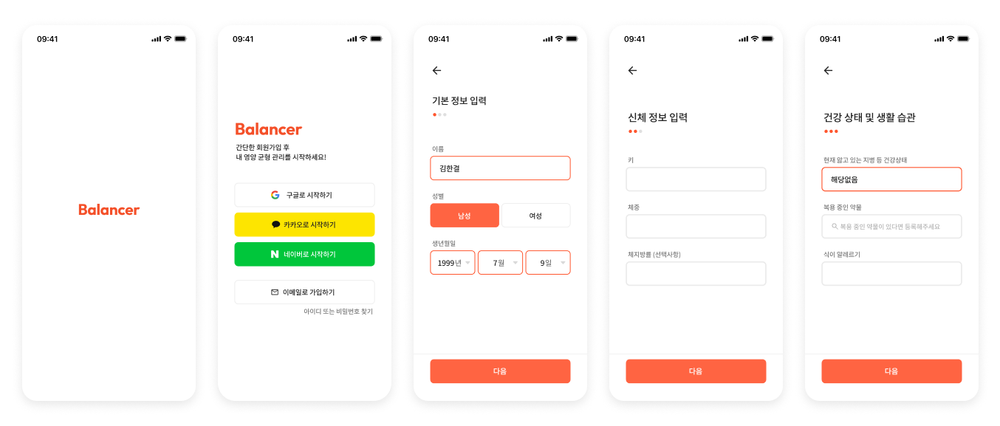
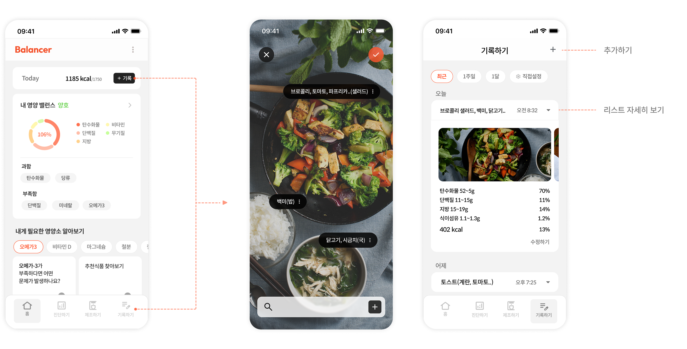
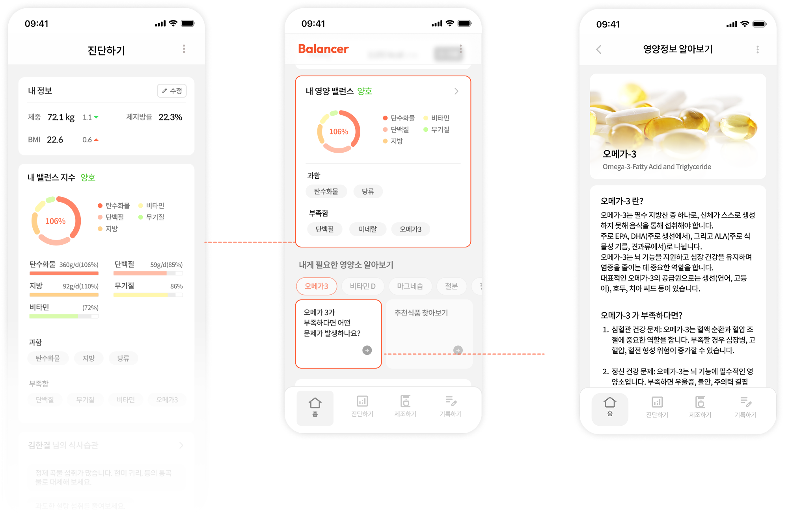
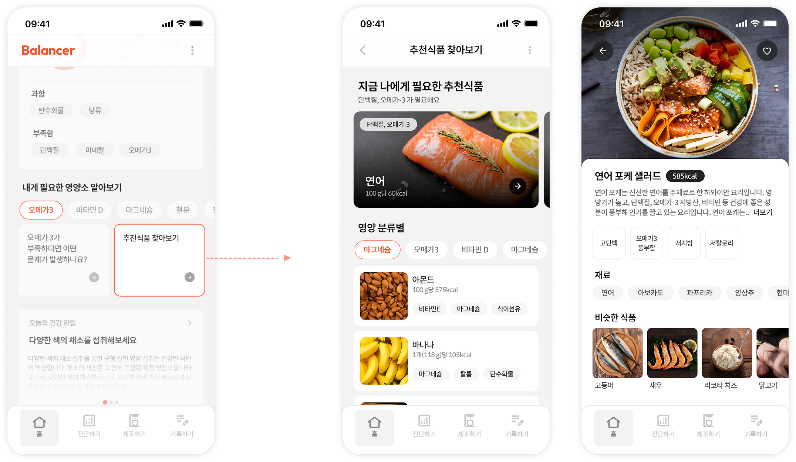
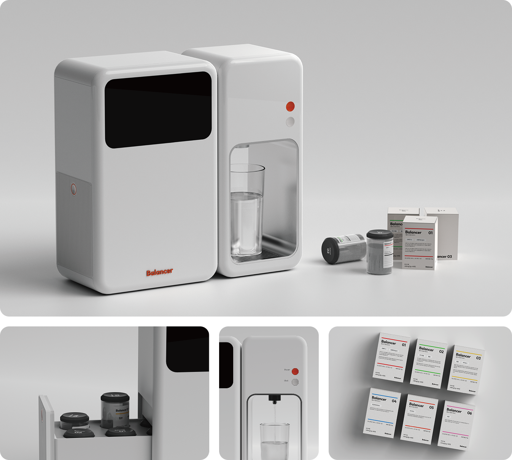
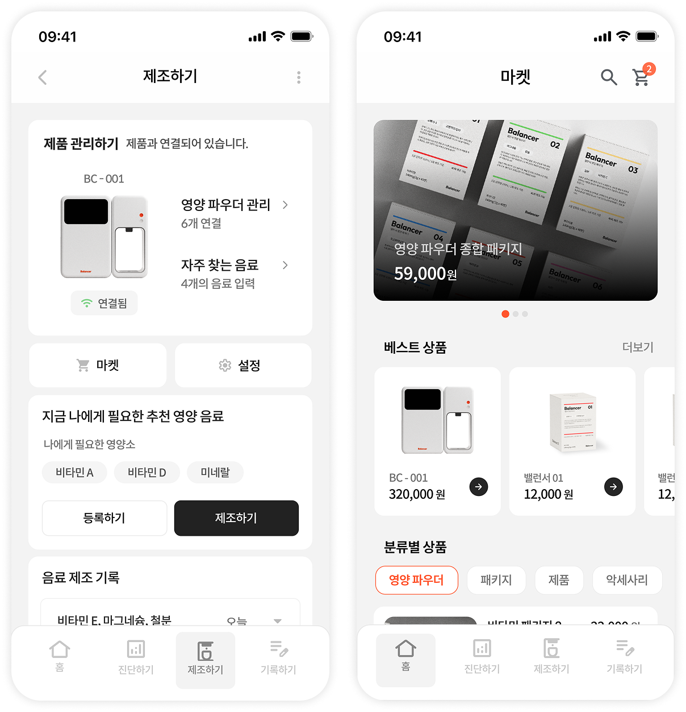

문제 정의
영양 정보는 복잡하고 개인마다 필요한 기준이 달라, 사용자가 자신의 영양 상태를 쉽게 파악하기 어렵습니다.
식단 기록을 바탕으로 영양 밸런스를 분석하고, 필요한 식품과 맞춤 영양 음료를 제안하는 앱·제품 디자인 프로젝트.

프로젝트 개요
Balancer는 사용자의 신체 정보와 식단 기록을 바탕으로 영양 상태를 분석하고, 필요한 식품과 맞춤 영양 음료를 제안하는 서비스입니다. 앱에서는 식단 기록, 영양 밸런스 진단, 추천 식품 탐색을 제공하고, 제품 디자인에서는 앱과 연동되는 영양 음료 디스펜서를 제안했습니다.
문제 정의와 방향
Balancer는 단순한 식단 기록 앱이 아니라, 사용자의 식단 데이터를 바탕으로 영양 상태를 분석하고 식품 추천과 제품 경험까지 연결하는 서비스로 기획했습니다.
영양 정보는 복잡하고 개인마다 필요한 기준이 달라, 사용자가 자신의 영양 상태를 쉽게 파악하기 어렵습니다.
식단 기록을 바탕으로 부족하거나 과한 영양소를 분석하고, 필요한 식품과 제품 경험으로 연결합니다.
기록하기 → 진단하기 → 추천식품 → 맞춤 영양 음료 제조
앱 디자인
식단 기록, 영양 진단, 추천 식품 탐색을 중심으로 사용자가 자신의 영양 상태를 쉽게 확인하고 개선할 수 있도록 설계했습니다.

회원가입부터 신체·건강 정보 입력까지, 개인 맞춤 영양 분석에 필요한 정보를 단계적으로 수집하는 흐름을 설계했습니다.

홈 화면에서 오늘의 영양 상태를 한눈에 확인하고, 사진 기반으로 빠르게 식단을 기록할 수 있도록 설계했습니다.

내 정보와 식단을 분석해 영양 밸런스를 한눈에 보여주고, 각 영양소의 정보와 부족할 때 생길 수 있는 문제점을 간단히 알려줍니다.

사용자의 몸 상태에 따라 지금 필요한 영양소를 안내하고, 영양소별 추천 식품과 각 음식의 칼로리·성분·비슷한 식품 정보까지 한 곳에서 탐색할 수 있도록 설계했습니다.
제품 디자인
앱에서 분석한 영양 상태를 바탕으로, 사용자에게 필요한 영양 음료를 제조하는 디스펜서 제품을 함께 제안했습니다.

영양 파우더 카트리지를 기반으로 사용자에게 필요한 영양 음료를 제조하는 디스펜서. 미니멀한 폼팩터와 패키지 시스템을 함께 디자인했습니다.

디스펜서와 연결된 영양 파우더 관리, 음료 제조 흐름, 그리고 마켓에서의 추가 구매까지 한 곳에서 처리할 수 있도록 앱 UI를 설계했습니다.
디자인 시스템
오렌지 컬러를 중심으로 활력 있고 긍정적인 인상을 만들고, 라운드 카드 UI를 사용해 정보 영역을 명확하게 구분했습니다.
다른 프로젝트도 함께 살펴보세요.